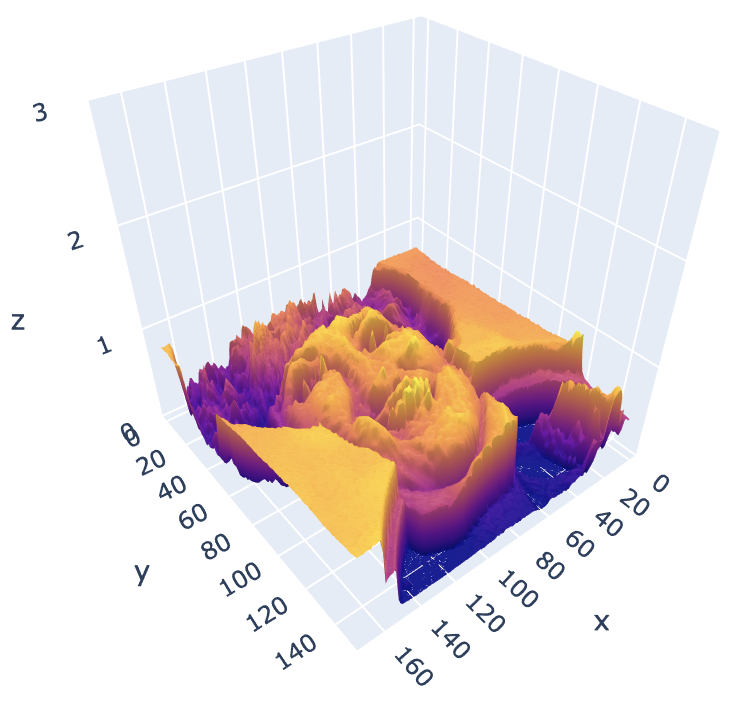
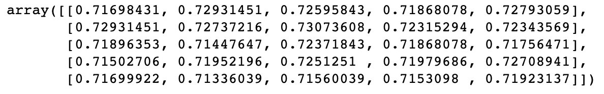
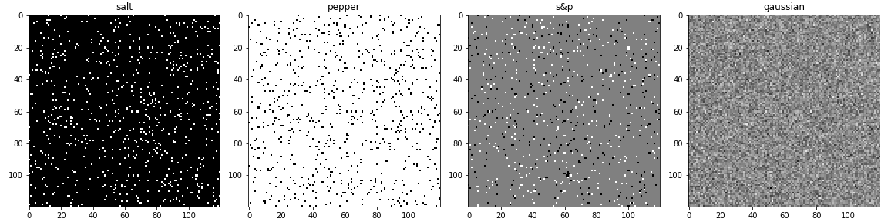
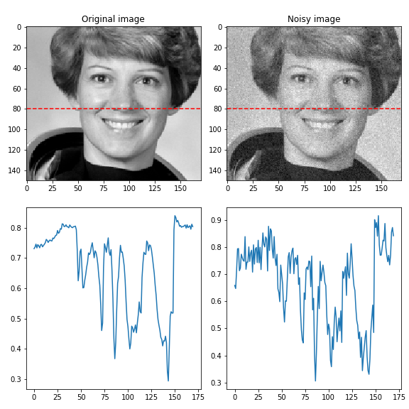
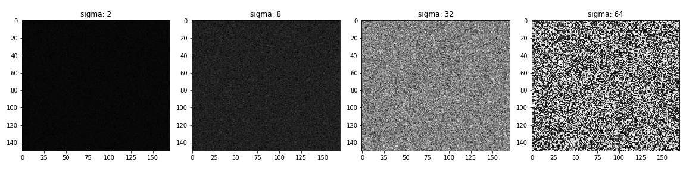

Images, filtering, convolution and edge detection
Contents
Images as a functions
Images can be represented as a function:

We think of an image as a function, \(f\) or \(I\), from \(\mathbb{R}^2\) to \(\mathbb{R}\):
- \(f(x, y)\) gives the intensity or value at position \((x,y)\).
A color image is just three functions “stacked” together. We can write this as “vector-valued function”:
\begin{equation*}
f(x, y) =
\begin{bmatrix}
r(x, y) \\
g(x, y) \\
b(x, y)
\end{bmatrix}
\end{equation*}
In computers images are represented as a set of numbers, not continuous functions:

In computer vision we typically operate on digital(discrete) images:
- Sample the 2D space on regular grid
- Quantize each sample (round to “nearest integer”)
Noise
Noise is just another function that is combined with the original function to get a new one:
\begin{equation*}
I’(x, y) = I(x, y) + \eta(x, y)
\end{equation*}
Types:
- Impulse (salt): random occurrences of white pixels
- Pepper: random black pixels
- Salt and pepper: random occurrences of black and white pixels
- Gaussian noise: variations in intensity drawn from a Gaussian normal distribution

To apply a noise it’s enough just to add it to the initial image:
noise = np.random.normal(mean, variance ** 0.5, image.shape) output = image + noise

Effect of \(\sigma\) (standard deviation) on Gaussian noise. Just to remind: \(variance = \sigma^2\).
